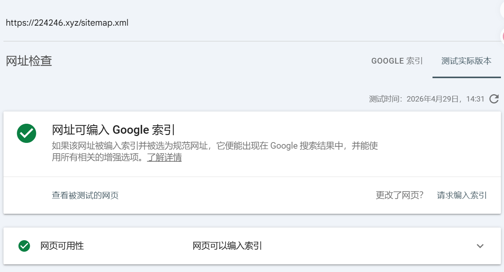

May 6, 2026
How I Deployed My SEO Site — Zero Code, Just Tutorials
I deployed my first SEO site with zero code experience.
This is my real, step-by-step journey.
View More



Explore all my hands-on SEO projects and practical implementations from scratch.
Return to Home Page →